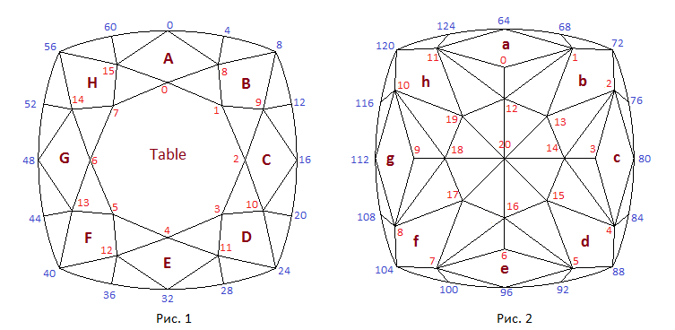

В данном разделе мы создадим модель огранки, которая носит название
мальтийский крест.
По ссылке Maltese - Light Dispersion
можно увидеть многогранник отображенный при помощи кубических карт. При нажатии на приведенной по ссылке
странице кнопки Inverse многогранник отобразится на черном фоне.
Построим многогранник, внешний вид которого можно увидеть в online-программе. Его рундист является линией по форме
напоминающей "подушку". Построение линии данного рундиста было подробно рассмотрено в предыдущих главах.
Павильон многогранника своим внешним видом напоминает мальтийский восьмиконечный крест (Maltese Cross).
Поэтому назовем огранку Cushion Maltese Cross Cut или просто Maltese.
Павильон многогранника содержит 48 граней, а корона 32 грани без учета площадки. Будем считать, что у данной огранки
длина равна (или примерно равна) ее ширине. Это означает, что удлинение огранки (параметр lw) равно 1.0
или отклоняется от 1.0 на незначительную величину. Такую огранку можно, очень условно, назвать "квадратной" огранкой.
Схематичные изображения короны и павильона огранки, а также нумерация вершин показаны на рисунках 1 и 2. Рисунок 1 отображает вид многогранника когда наблюдатель находится снаружи модели и смотрит на корону сверху. На рисунке 2 наблюдатель смотрит на павильон сверху как если бы он находился внутри модели.
var lw = 1.0; // Отношение длины к ширине // Рундист var r = 0.040; // Толщина рундиста // Для следующих трех полей в dat.GUI не будем вводить параметры // Эти три поправки введены для получения более равномерного по толщине рундиста var del_gd_1 = 0.013; // изменяет глубину рундиста в его вершинах g64, g80 ... var del_gd_2 = 0.004; // изменяет глубину рундиста в его вершинах g72, g88 ... var del_gd_3 = -0.003; // изменяет глубину рундиста в его вершинах g68, g76 ... // Форма рундиста задается точно также как в Girdle1_A.html и Girdle1_B.html var rounnd_cir1 = 0.114; // "Roundness front" var rounnd_cir2 = 0.114; // "Roundness flank" var R3 = 0.034; // "Radius corner" // Расстановка вершин на рундисте задается также как в Girdle1_B.html var ang_2 = 38*DEGREE; // "Front angle girdle" var ang_3 = 38*DEGREE; // "Flank angle girdle" var ang_corner = 45.0*DEGREE; // "Corner angle girdle"" var gd_segments = 0.18; // Основной параметр задающий размеры сегментов // Корона var beta = 35*DEGREE; // Угол наклона короны к горизонтальной плоскости var t = 0.60; // Размер площадки var starFacets = 0.5; // Star facets // Павильон var hp1 = 0.32; // "Pavilion depth level 1 (hp1) " var hp2 = 0.163; // "Pavilion depth level 2 (hp2) " var del_hp1 = 0.020; // Смотри текст программы var pav_ang_a = 54*DEGREE; // Угол наклона грани a павильона var pav_ang_b = 41.9*DEGREE; // Угол наклона грани b павильона var pav_ang_c = 54*DEGREE; // Угол наклона грани c павильона var hA0 = 0.192; // Глубина центральных вершины на гранях a и b var hA1 = 0.09; // Глубина боковых вершины на гранях a, b и c
Корону многогранника "подушка" можно было бы построить аналогично тому, как строится корона круглого бриллианта. Однако, из-за значительного отличия формы рундиста "подушки" от формы рундиста круглого бриллианта, рисунок короны при таком построении окажется не слишком красивым. Поэтому для создания короны огранки "подушка" обычно используется совершенно иной способ ее построения. Прежде всего, требуется определить основные требования к рисунку короны. Под этим понимается расположение одних ребер и граней короны относительно других ее граней и ребер, а также относительно граней и ребер рундиста. Желательно построить корону таким образом, чтобы ребра (рис.1) сединяющие вершину короны 8 с вершиной рундиста 4 и вершину короны 9 с вершиной рундиста 12 (а также ребра аналогичные этим ребрам в других квадрантах огранки) подходили к линии рундиста под прямым углом. Угловая грань B должна по возможности оставаться симметричной относительно прямой, проведенной через вершину короны 1 и рундиста 8, при изменении удлинения огранки. Это же относится и к трем другим угловым граням короны.
При построении короны многогранника "подушка" возникают значительные трудности с внесением в число его параметров
параметра Star facets (определение этого параметра приведено в главе в которой создавалась модель бриллианта)
таким образом, чтобы он был не только параметром "read-only", но и мог использоваться для задания соответствующего
значения параметра. При построении огранок бриллиант, маркиз, груша и сердце параметр Star facets рассчитывался
при помощи другого параметра Square table, которому соответствует поле dSquare в структуре данных огранки (СДМ).
Параметр Star facets при таком подходе собственного поля в СДМ не имеет. Значение параметра dSquare естественным
образом связано со способом построения перечисленных огранок, так как задает основные пропорции короны.
Только в огранке Marquise (первый вариант построения короны этой огранки) она была построена без использования
параметра Square table. В ней значение параметра Star facets рассчитывалось напрямую, без использования
значения dSquare. Такое построение короны огранки Marquise было сделано в основном для того,
чтобы показать, что существуют и другие подходы к созданию корон огранок, которые не требуют введения величины
параметра dSquare в СДМ.
При построении в данном разделе короны многогранника "подушка" параметр Star facets будет введен
в число параметров напрямую и, поэтому, он получит собственное поле starFacets в СДМ.
Значительная часть программы построения короны предназначена как раз для того, чтобы обеспечить возможность
работы с этим параметром.
Будем считать, что положение узловых вершин рундиста со стороны короны уже найдено в процессе работы функции
вычисляющей координаты вершин рундиста (смотри Girdle1_B.html). Перейдем к поэтапному рассмотрению
построения короны многогранника.
Прежде всего, определяются уравнения плоскостей, в которых лежат грани A, B и C короны.
Для их нахождения необходимо задать углы наклона этих плоскостей к горизонтальной плоскости. Примем в качестве
значения угла наклона всех трех плоскостей значение параметра Crown angle, которому в структуре данных модели
соответствует переменная beta. Таким образом, параметр Crown angle одновременно и одинаковым
образом меняет наклон граней A и C. Мы задали наклон угловой грани B также равным
углу beta, но в ходе дальнейшего построения огранки это значение будет пересчитано и
наклон угловой грани B станет отличаться от углов наклона граней A и C.
Плоскости граней A, B и C проходят через вершины рундиста 0, 8 и 16. Расчет уравнений плоскостей осуществляется при помощи
функции Facet (можно использовать и функцию CreateInclinePlane).
На следующем этапе находится уравнение горизонтальной плоскости, в которой лежит площадка короны.
Нетрудно убедиться, в том, что значение высоты площадки рассчитывается по следующей формуле
0.5 · tan (угол_короны) · (1 – ширина_площадки) + толщина_рундиста/2.
Затем находим уравнения плоскостей, проходящих перпендикулярно к линиям касательным к рундисту в его узловых вершинах 0, 8, 16, а также 4 и 12. Это плоскости pl_normal_g0, pl_normal_g4 ... pl_normal_g16. Координаты вершин короны 0, 1 и 2 находим как точки пересечения трех плоскостей. Для определения положения вершины 0 короны берутся плоскость грани A, pl_normal_g0 и плоскость площадки. Для определения положения вершины 1 короны берутся плоскости B, pl_normal_g8 и плоскость площадки, а для вершины 2 – берутся плоскости C, pl_normal_g16 и плоскость площадки. Следует особо подчеркнуть тот факт, что координаты короны 1 являются предварительными и в ходе дальнейших вычислений будут пересчитаны. Положение вершин короны 8 и 9 должно быть определено с учетом значения параметра starFacets. Прежде всего найдем прямую ln_A_B по которой пересекаются плоскости в которых лежат грани A и B.
Построим две вспомогательные вертикальные плоскости. Одна из них будет через вершину рундиста 4 и касаться линии рундиста в этой вершине. Вторая вертикальная плоскость будет проходить через вершину короны 0 и найденное предварительное положение вершины короны 1. После этого определим координаты точек пересечения прямой по которой пересекаются плоскости A и B короны с этими двумя вертикальными плоскостями. Эти две точки найденные точки ограничивают собой отрезок на прямой, по которой пересекаются плоскости A и B. Значение параметра Star facets определяет, в каком отношении вершина короны 8 делит этот отрезок на две части. Заметим, что на следующем шаге мы несколько скорректируем положение вершины короны 8 в горизонтальной плоскости (но не тронем значение ее высоты) и поэтому положение вершины 8, также как и положение вершины 1 короны, пока считаем предварительным. Нам от вершины 8 требуется только значение ее высоты. Эта высота определит положение горизонтальной плоскости, на которой расположены все вершины средней части короны – 8, 9, 10, 11, 12, 13, 14, 15. Заметим, что все эти вершины должны обязательно иметь одинаковую высоту (координату по оси OZ).
Теперь можно перейти к нахождению окончательных координаты вершин короны 8 и 9. Вершину короны 8 получаем как точку пересечения трех плоскостей – горизонтальной плоскости, на которой расположены вершины средней части короны, плоскости A и вертикальной плоскости проходящей перпендикулярно к рундисту в его вершине 4. Вершину короны 9 получаем как точку пересечения трех плоскостей – той же горизонтальной плоскости, плоскости C и вертикальной плоскости проходящей перпендикулярно к рундисту в его вершине 12.
На следующем этапе построения короны находим новое уравнение плоскости, в которой лежит грань B. Уравнение плоскости определяем по трем ее вершинам – вершине рундиста 8 и вершинам короны 8 и 9. Последнее, что требуется сделать – это пересчитать положение вершины 1 короны в горизонтальной плоскости (по оси OX и OY). Для пересчета создаем плоскость перпендикулярную плоскости OXY, проходящую через две точки. Одна из этих точек – это вершина рундиста 8. Другая точка – эта точка, координаты которой по осям OX и OY представляют собой среднее арифметическое координат вершин короны 8 и 9 по этим же осям. Новое значение положения вершины 1 находим как точку пересечения созданной только что вертикальной плоскости, плоскости в которой лежит площадка огранки, и плоскости в которой лежит грань B. Эта вертикальная плоскость строится по трем точкам, две из которых pt_mid_1 и pt_mid_2 расположены на одной вертикальной прямой. Остальные вершины короны находятся из соображений симметрии огранки. Из приведенного описания построения короны видно, что основная сложность при создании огранки действительно заключается в реализации приемлемой работы параметра Star facets. Если в данной огранке от него отказаться и заменить его высотой плоскости, на которой лежат средние вершины короны 8, 9, . . . 15, то построение огранки значительно упростится, но внешний вид короны сверху в этом случае будет определяться косвенно через задание высоты, на которой лежит эта горизонтальная плоскость.
InitGirdle();
var i;
var nCrown = 16;
var nGirdle = 64;
var nPav = 21;
// Для большей равномерности толщины рундиста со стороны павильона
// делаем небольшие добавки (+/-) к значению величины -r/2
var d1 = del_gd_1;
girdle[64+0][2] = -r/2 + d1;
girdle[64+16][2] = -r/2 + d1;
girdle[64+32][2] = -r/2 + d1;
girdle[64+48][2] = -r/2 + d1;
var d2 = del_gd_2;
girdle[64+8][2] = -r/2 + d2;
girdle[64+24][2] = -r/2 + d2;
girdle[64+40][2] = -r/2 + d2;
girdle[64+56][2] = -r/2 + d2;
var d3 = del_gd_3;
girdle[64+4][2] = -r/2 + d3;
girdle[64+12][2] = -r/2 + d3;
girdle[64+20][2] = -r/2 + d3;
girdle[64+28][2] = -r/2 + d3;
girdle[64+36][2] = -r/2 + d3;
girdle[64+44][2] = -r/2 + d3;
girdle[64+52][2] = -r/2 + d3;
girdle[64+60][2] = -r/2 + d3;
var X1 = new Vector3D(1, 0, 0);
var Y1 = new Vector3D(0, 1, 0);
var Z1 = new Vector3D(0, 0, 1);
// Плоскости в которых лежат грани короны A, B и C.
var A = Facet(beta, girdle[60], girdle[4], girdle[0]);
var B = Facet(beta, girdle[4], girdle[12], girdle[8]);
var C = Facet(beta, girdle[12], girdle[20], girdle[16]);
// Создаем горизонтальнаую плоскость на уровне площадки
var h_table = 0.5 * Math.tan (beta) * (1 - t);
var table = new Plane3D();
table.CreatePlaneNormalDistOXYZ(Z1, h_table + r/2);
// Вектора идущие вдоль линий касательных к рундисту в его вершинах 4 и 12
var dir_g4 = new Vector2D(girdle[5][0] - girdle[3][0], girdle[5][1] - girdle[3][1]);
dir_g4.Normer();
var dir_g12 = new Vector2D(girdle[13][0] - girdle[11][0], girdle[13][1] - girdle[11][1]);
dir_g12.Normer();
// Вектора идущие вдоль линий касательных к рундисту в его вершинах 0, 8 и 16
var dir_g0 = new Vector2D(girdle[1][0] - girdle[63][0], girdle[1][1] - girdle[63][1]);
dir_g0.Normer();
var dir_g8 = new Vector2D(girdle[9][0] - girdle[7][0], girdle[9][1] - girdle[7][1]);
dir_g8.Normer();
var dir_g16 = new Vector2D(girdle[17][0] - girdle[15][0], girdle[17][1] - girdle[15][1]);
dir_g16.Normer();
// Плоскости проходящие перпендикулярно к касательным к рундисту в его вершинах 0, 8 и 16
var vec_normal_g0 = new Vector3D(dir_g0[0], dir_g0[1], 0);
vec_normal_g0.Normer();
var pl_normal_g0 = new Plane3D();
pl_normal_g0.CreatePlaneNormalVectorPoint(vec_normal_g0, girdle[0]);
var vec_normal_g16 = new Vector3D(dir_g16[0], dir_g16[1], 0);
vec_normal_g16.Normer();
var pl_normal_g16 = new Plane3D();
pl_normal_g16.CreatePlaneNormalVectorPoint(vec_normal_g16, girdle[16]);
var vec_normal_g8 = new Vector3D(dir_g8[0], dir_g8[1], 0);
vec_normal_g8.Normer();
var pl_normal_g8 = new Plane3D();
pl_normal_g8.CreatePlaneNormalVectorPoint(vec_normal_g8, girdle[8]);
// Плоскости проходящие перпендикулярно к касательным к рундисту в его вершинах 4 и 12
var vec_normal_g4 = new Vector3D(dir_g4[0], dir_g4[1], 0);
vec_normal_g4.Normer();
var pl_normal_g4 = new Plane3D();
pl_normal_g4.CreatePlaneNormalVectorPoint(vec_normal_g4, girdle[4]);
var vec_normal_g12 = new Vector3D(dir_g12[0], dir_g12[1], 0);
vec_normal_g12.Normer();
var pl_normal_g12 = new Plane3D();
pl_normal_g12.CreatePlaneNormalVectorPoint(vec_normal_g12, girdle[12]);
// Находим вершины короны лежащие на уровне площадки
crown[0] = table.IntersectionThreePlanes(A, pl_normal_g0);
crown[2] = table.IntersectionThreePlanes(C, pl_normal_g16);
// Это предварительное вычисление вершины crown[1]
crown[1] = table.IntersectionThreePlanes(B, pl_normal_g8);
// Вычисление по заданному значению Star Facet высоты средней
// горизонтальной плоскости короны, которая определяет
// высоту вершин 8, 9, 10, 11, 12, 13, 14 и 15.
// Две вспомогательные плоскости, которые потребуются в процессе вычислений
var plane_hor_1 = new Plane3D();
plane_hor_1.CreatePlaneNormalDistOXYZ(Z1, 0.0);
var plane_hor_2 = new Plane3D();
plane_hor_2.CreatePlaneNormalDistOXYZ(Z1, 1.0);
// Две вспомогательные точки для нахождения прямой определяемой пересечением
// вспомогательных плоскостей с плоскостями в которых лежат грани A и B
var point_1 = plane_hor_1.IntersectionThreePlanes(A, B);
var point_2 = plane_hor_2.IntersectionThreePlanes(A, B);
// Находим прямую, проходящую по линии пересечения плоскостей A и B
var ln_A_B = new Line3D(point_1, point_2);
// Вертикальная плоскость прохдящая касательно к рундисту в вершине girdle[4]
var dir_n = new Vector3D(dir_g4[1], -dir_g4[0], 0.0);
dir_n.Normer();
var plane_tang_g4 = new Plane3D();
plane_tang_g4.CreatePlaneNormalVectorPoint(dir_n, girdle[4]);
// Вертикальная плоскость проходящая через вершины короны 0 и 1
var plane_cr0_cr1 = new Plane3D();
plane_cr0_cr1.CreatePlaneThreePoints(crown[1], crown[0],
new Point3D(crown[0][0], crown[0][1], crown[0][2] + 1.0));
// Вспомогательная точка point_1, лежащая на линии пересечения
// плоскостей A, B и plane_tang_g4
point_1 = plane_tang_g4.IntersectionThreePlanes(A, B);
// Вспомогательная точка point_2, находящаяся в месте пересечения
// плоскости plane_cr0_cr1 и прямой ln_A_B
point_2 = ln_A_B.IntersectionLinePlane(plane_cr0_cr1);
// Средняя горизонтальная плоскость короны лежит между
// точками point_1 и point_2 и проходит через вершину короны 8.
// Находим координаты короны 8 (требуется только высота этой вершины).
var ht_8_2 = point_2[2] - (point_2[2] - point_1[2]) * starFacets;
// Горизонтальная плоскость проходящая на уровне вершины 8 короны.
var plane_hor_cr8 = new Plane3D();
plane_hor_cr8.CreatePlaneNormalDistOXYZ(Z1, ht_8_2);
// Пересчитываем координаты вершины 8 короны
// и находим координаты вершины 9 короны.
crown[8] = plane_hor_cr8.IntersectionThreePlanes(A, pl_normal_g4);
crown[9] = plane_hor_cr8.IntersectionThreePlanes(C, pl_normal_g12);
// Новое положение плоскости в которой лежит грань B
B.CreatePlaneThreePoints(girdle[8], crown[8], crown[9]);
// Точки pt_mid_1 и pt_mid_2 лежат посередине между вершинами 8 и 9
// короны но располагаются на разной высоте (произвольной).
var pt_mid_1 = new Point3D((crown[8][0] + crown[9][0])/2, (crown[8][1] + crown[9][1])/2, 1);
var pt_mid_2 = new Point3D((crown[8][0] + crown[9][0])/2, (crown[8][1] + crown[9][1])/2, 2);
// Строим вертикальную плоскость проходящую
// через точки pt_mid_1, pt_mid_2 и вершину короны 8.
var pl_normal_g8 = new Plane3D();
pl_normal_g8.CreatePlaneThreePoints(girdle[8], pt_mid_1, pt_mid_2);
// Пересчитываем положение вершины 1 короны
crown[1] = B.IntersectionThreePlanes(pl_normal_g8, table);
// Координаты остальных вершин короны находятся из соображений
// симметрии огранки относительно плоскостей OXZ и OYZ
crown[15] = new Point3D(-crown[8][0], crown[8][1], crown[8][2]);
crown[14] = new Point3D(-crown[9][0], crown[9][1], crown[9][2]);
crown[7] = new Point3D(-crown[1][0], crown[1][1], crown[1][2]);
crown[6] = new Point3D(-crown[2][0], crown[2][1], crown[2][2]);
crown[10] = new Point3D(crown[9][0], -crown[9][1], crown[9][2]);
crown[3] = new Point3D(crown[1][0], -crown[1][1], crown[1][2]);
crown[4] = new Point3D(crown[0][0], -crown[0][1], crown[0][2]);
crown[5] = new Point3D(crown[7][0], -crown[7][1], crown[7][2]);
crown[11] = new Point3D(crown[8][0], -crown[8][1], crown[8][2]);
crown[12] = new Point3D(crown[15][0], -crown[15][1], crown[15][2]);
crown[13] = new Point3D(crown[14][0], -crown[14][1], crown[14][2]);
// Корректировка положения вершин рундиста по оси Z со стороны короны
girdle[1] = corr_gd_crown(girdle[0], girdle[4], girdle[1], girdle[1+64], crown[8]);
girdle[2] = corr_gd_crown(girdle[0], girdle[4], girdle[2], girdle[2+64], crown[8]);
girdle[3] = corr_gd_crown(girdle[0], girdle[4], girdle[3], girdle[3+64], crown[8]);
girdle[5] = corr_gd_crown(girdle[4], girdle[8], girdle[5], girdle[5+64], crown[8]);
girdle[6] = corr_gd_crown(girdle[4], girdle[8], girdle[6], girdle[6+64], crown[8]);
girdle[7] = corr_gd_crown(girdle[4], girdle[8], girdle[7], girdle[7+64], crown[8]);
girdle[9] = corr_gd_crown(girdle[8], girdle[12], girdle[9], girdle[9+64], crown[9]);
girdle[10] = corr_gd_crown(girdle[8], girdle[12], girdle[10], girdle[10+64], crown[9]);
girdle[11] = corr_gd_crown(girdle[8], girdle[12], girdle[11], girdle[11+64], crown[9]);
girdle[13] = corr_gd_crown(girdle[12], girdle[16], girdle[13], girdle[13+64], crown[9]);
girdle[14] = corr_gd_crown(girdle[12], girdle[16], girdle[14], girdle[14+64], crown[9]);
girdle[15] = corr_gd_crown(girdle[12], girdle[16], girdle[15], girdle[15+64], crown[9]);
for (i = 1; i < 16; i++)
{
girdle[16+i][2] = girdle[16-i][2];
girdle[48-i][2] = girdle[16-i][2];
girdle[48+i][2] = girdle[16-i][2];
}
При принятом способе построения короны данной огранки, кроме параметров задающих форму рундиста,
необходимо иметь три параметра непосредственно относящихся к короне:
1. Угол короны Crown angle который напрямую определяет наклон граней A и C короны и, косвенно,
наклон грани B.
2. Ширина площадки Table size.
3. Параметр Star facets был рассмотрен выше.
Эти три параметра представляют собой минимальный набор параметров, которые необходимы для построения короны.
Они имеют отведенные им поля в структуре данных модели (СДМ). Эти поля носят названия beta,
t и starFacets соответственно.
Для изменения высоты короны в огранке присутствуют два вычисляемых параметра Crown height и Crown height 2.
Высота короны определяется следующим значением:
crown_height = tan (beta) · (1 – t) / 2.
Как видно из приведенного выражения высота короны зависит одновременно и от значения параметра beta
и от значения параметра t. Поэтому, если мы хотим изменить высоту короны, то сделать это можно двумя способами.
При первом способе изменения высоты короны угол короны не меняется и величина beta остается постоянной.
Если высоте короны было назначено новое значение задавемая_высота_короны, то при этом изменится ширина площадки,
и она может быть вычислена по следующей формуле:
t = 1 – 2 · (задавемая_высота_короны) / tan (beta).
При втором способе изменения высоты короны ширина площадки остается неизменной, а изменяется угол короны beta.
Фактически при таком изменении угла короны происходит растяжение (или сжатие) короны вдоль оси OZ огранки.
В этом случае новое вычисленное значение для угла короны вычисленное_значение_beta расчитывается по следующей формуле
вычисленное_значение_beta = atan (задавемая_высота_короны) / (0.5 – t/2).
В online-программе первому способу изменения высоты короны соответствует параметр Crown height,
а второму – параметр Crown height 2.
Так как построение рундиста огранки и расстановка вершин на нем уже сделаны, мы можем построить плоскости, в которых лежат грани a, b и c павильона. Для нахождения уравнений этих плоскостей используются значения параметров pav_ang_a, pav_ang_b и pav_ang_c. В СДМ этим параметрам соответствуют одноименные поля, которые задают наклон граней a, b и c к горизонтальной плоскости OXY. Азимуты граней a и c определены тем фактом, что оси OX и OY расположены параллельно соответственно граням a и c. Азимут грани b задан направлением прямой проходящей через вершины рундиста 68 и 76. Для определения уравнений плоскостей, в которых лежат грани a, b и c следует также задать по одной точке для каждой плоскости, через которую будет проходить рассматриваемая плоскость. В качестве таких точек выступают вершины рундиста 64, 72 и 80.
Перейдем к определению положения наиболее близко расположенных к рундисту вершин павильона.
Глубина вершины 1 павильона задается при помощи параметра hA1, которому в СДМ соответствует поле
hA1. Для определения положения вершины 1 павильона проведем вспомогательную горизонтальную плоскость
planeHorA1 располгающуюся на глубине (- hA1 - r/2), где величина r является толщиной рундиста.
Вершина павильона 1 определяется как точка пересечения плоскостей, в которых лежат грани
павильона a, b и построенная горизонтальная плоскость. Положение вершины 2 павильона определяется
как точка пересечения плоскостей граней b и c с этой же горизонтальной плоскостью.
Для нахождения положения вершин павильона 0, 3 и 13 создадим три вертикальные (расположенные перпендикулярно плоскости OXY) вспомогательные плоскости planeX0, planeY0 и planeXY. Плоскость planeX0 проходит через ось OX, плоскость planeY0 проходит через ось OY, а плоскость planeXY проходит через начало координат и вершину рундиста 72. На глубине (- hA0 - r/2), определенной параметром hA0, проводим горизонтальную плоскость. Вершина павильона 0 определяется как точка пересечения плоскостей a, planeX0 и построенной горизонтальной плоскости. Вершина павильона 3 определяется подобным образом – как точка пересечения плоскостей c, planeY0 и этой же горизонтальной плоскости.
Из рис.2 видно, что фактически павильон состоит из двух частей – верхней, примыкающей к рундисту,
и нижней, заканчивающейся калетой огранки. Границей между двумя частями павильона служат вершины
павильона 12, 13, 14, . . . 19. Глубины вершин павильона 13, 15, 17 и 19
определяются значением параметра hp1.
Глубина вершин павильона 12, 14, 16 и 18 также задается значением параметра hp1.
Но для того чтобы была возможность сделать высоту указанных вершин не равной высоте вершин павильона
13, 15, 17 и 19, вводится параметр del_hp1, который позволяет изменить глубину этих
вершин павильона и сделать ее отличной от глубины вершин 12, 14, 16 и 18.
Для определения глубины вершин 13, 15, 17, 19 создается горизонтальная плоскость pl_hp1
со значением координаты по оси OZ равным (– hp1 – r/2). Положение вершины павильона 13
определяется как точка пересечения этой горизонтальной плоскости, плоскости грани b и плоскости planeXY.
Для определения глубины вершин 12, 14, 16, 18 создается горизонтальная плоскость pl_del_hp1
глубина расположения которой по оси Z будет отличаться от глубины расположения
плоскости pl_hp1 на величину задаваемую параметром del_hp1. Следовательно горизонтальная
плоскость pl_del_hp1 должна проходить на расстоянии (– hp1 – del_hp1 – r/2) от начала координат.
С точки зрения симметрии павильона огранки желательно, чтобы в горизонтальной плоскости OXY
вершины павильона 12, 13 и 14 располагались на одинаковом расстоянии от кaлеты если
значение удлинения равно 1.0. Для того чтобы удовлетворить этому требованию можно вычислить
длину проекции на горизонтальную плоскость отрезка заключенного между началом координат
и вершиной 13. После этого строится вертикальная плоскость, проходящая параллельно плоскости OXZ
на расстоянии найденной длины этой проекции. Построенная плоскость должна располагаться в области
положительных значений оси OY. Очевидно, что вершина 12 будет принадлежать этой плоскости.
Положение вершины 12 определяется как точка пересечения этой, только что созданной вертикальной
плоскости с плоскостями planeX0 и pl_del_hp1.
Координаты вершины 14 павильона находятся по точно такой же методике. Такой расчет положения
вершин 12 и 14 предполагает, что у данной огранки возможность изменения их положения
фактически отсутствует. Положение указанных вершин в горизонтальной плоскости определяется неявно
(глубину этих вершин определяет сумма значений hp1 и del_hp_1) .
Если удлинение огранки отличается от 1.0, например, в большую сторону, то расстояние от начала
координат до вершины 14, очевидным образом должно быть большим, чем расстояние от начала
координат до вершины 12. Однако данный метод построения не позволяет этого сделать.
Поэтому резко сужается диапазон, в котором может изменяться выпуклость павильона.
Таким образом, мы нашли координаты всех вершин павильона для одного квадранта огранки.
Остальные вершины павильона находятся из соображений симметрии огранки.
pavil[20] = new Point3D(0, 0, -r/2 - hp1 - hp2); // калетта // Плоскости в которых лежат грани a, b и c павильона var a = Facet(- pav_ang_a, girdle[60+64], girdle[4+64], girdle[64]); var b = Facet(- pav_ang_b, girdle[4+64], girdle[12+64], girdle[8+64]); var c = Facet(- pav_ang_c, girdle[12+64], girdle[20+64], girdle[16+64]); // Проводим горизонтальную плоскость на уровне точки hA0 var planeHorA0 = new Plane3D(); planeHorA0.CreatePlaneNormalVectorPoint(Z1, new Point3D(0, 0, - hA0 - r/2)); // Проводим горизонтальную плоскость на уровне точки hA1 var planeHorA1 = new Plane3D(); planeHorA1.CreatePlaneNormalVectorPoint(Z1, new Point3D(0, 0, - hA1 - r/2)); var planeX0 = new Plane3D(); planeX0.CreatePlaneNormalDistOXYZ(X1, 0); var planeY0 = new Plane3D(); planeY0.CreatePlaneNormalDistOXYZ(Y1, 0); var planeXY = new Plane3D(); planeXY.CreatePlaneThreePoints(new Point3D(0,0,0), new Point3D(0,0,1), girdle[64+8]); pavil[0] = planeHorA0.IntersectionThreePlanes(a, planeX0); pavil[3] = planeHorA0.IntersectionThreePlanes(c, planeY0); var pl_hp1 = new Plane3D(); pl_hp1.CreatePlaneNormalDistOXYZ(Z1, - hp1 - r/2); pavil[13] = planeXY.IntersectionThreePlanes(b, pl_hp1); pavil[1] = planeHorA1.IntersectionThreePlanes(a, b); pavil[2] = planeHorA1.IntersectionThreePlanes(c, b); var radius = Math.sqrt(pavil[13][0] * pavil[13][0] + pavil[13][1] * pavil[13][1]); var pl_vert_A = new Plane3D(); pl_vert_A.CreatePlaneNormalDistOXYZ(Y1, radius); var pl_vert_B = new Plane3D(); pl_vert_B.CreatePlaneNormalDistOXYZ(X1, radius); // Проводим горизонтальную плоскость на уровне вершин павильона 12 и 14 var pl_del_hp1 = new Plane3D(); pl_del_hp1.CreatePlaneNormalVectorPoint(Z1, new Point3D(0, 0, - hp1 - del_hp1 - r/2)); pavil[12] = pl_del_hp1.IntersectionThreePlanes(pl_vert_A, planeX0); pavil[14] = pl_del_hp1.IntersectionThreePlanes(pl_vert_B, planeY0);
Параметр r позволяет задавать исходное значение толщины рундиста. Грани короны и павильона,
примыкающие к рундисту, при пересечении ими граней рундиста, уменьшают толщину рундиста на всем
его протяжении, кроме тех мест, где расположены его узловые вершины (0, 4, 8, . . . 60
и 64, 68, . . . 124). По этой причине рундист становится неравномерным по своей толщине.
Чем больше наклон граней короны и павильона, примыкающих к рундисту, тем более неравномерным
по толщине становится рундист. Так как наклон граней павильона подходящих к рундисту обычно больше,
чем наклон соответствующих граней короны, то на неравномерность рундиста грани павильона влияют сильнее,
чем грани короны. Для того чтобы хотя бы отчасти уменьшить эту неравномерность, в СДМ
огранки введены еще три дополнительных поля del_gd_1, del_gd_2 и del_gd_3.
Величина del_gd_1 позволяет изменять глубину рундиста в его вершинах 64, 80, 96 и 112,
где передние и боковые четырехугольные фасеты павильона своей одной вершиной опираются на рундист.
Величина del_gd_2 позволяет изменять глубину рундиста в его вершинах 72, 88, 104 и 120,
где угловые четырехугольные фасеты павильона своей одной вершиной опираются на рундист.
Величина del_gd_3 позволяет изменять глубину рундиста в его вершинах
68, 76, 84, 92, 100, 108, 116, 124. В этих вершинах ни одна из четырехугольных фасет
павильона не опирается на рундист огранки, но они являются теми вершинами рундиста,
в которых сходятся верхние клинья павильона.
Значения, которые задают эти значения этих тех полей в СДМ, вычитаются (складываются алгебраически)
из исходного значения абсолютной величины глубины рундиста в соответствующих узловых вершинах павильона.
Исходное значение толщины рундиста задается значением r. Поэтому увеличение значения для любого
из этих трех параметров ведет к уменьшению толщины рундиста в соответствующих вершинах.
Путем изменения значений этих трех параметров можно попытаться, хотя бы визуально,
сделать рундист более равномерным по толщине.
Чтобы не загромождать данную online-программу для этих трех полей в dat.GUI было
принято решение не вводить соответствующие параметры позволяющие изменять эти поля. Можно также
исключить эти поля из СДМ и просто задать соответствующие им значения при вычислениях координат вершин.
Модель огранки Maltese, которая была построена в данном разделе, следует рассматривать
только как пример создания подобных огранок. Можно построить подобные огранки с другим количеством граней
павильона и его рисунком. В построенной огранке при помощи задания различных значений параметров,
определяющих форму павильона и рундиста, можно также придавать павильону вид, значительно отличающийся
от вида получающегося при исходных значениях параметров.
Для симметричности рисунка павильона в горизонтальной плоскости желательно чтобы его вершины 12 и 14
находились на одном и том же расстоянии от калетты в этой плоскости. Это требование ведет к тому, что в пределах
выпуклости модели значение удлинения огранки можно изменять только в очень небольших пределах.
Поэтому, так как предполагается, что огранка в большинстве случаев имеет длину равную ширине, можно считать
ее симметричной относительно вертикальных плоскостей проходящих через оси OX и OY.
И, следовательно, можно предположить, что значения параметров определяющих углы наклона фасет передней и
боковой граней павильона a и c должны при их задании меняться одинаковым образом.
И, значит, можно ограничиться всего одним параметром для задания угла наклона этих граней.
То же самое относится к изменению значений следующих двух пар параметров определяющих форму рундиста и
разбиение его на сегменты – (rounnd_cir1, rounnd_cir2) и (ang_2, ang_3).
Значению параметра ang_corner можно придать постоянное значение равное 45° и исключить его из СДМ.
Учитывая названные выше пары параметров в общей сложности можно исключить четыре параметра из СДМ.
В построенной огранке такое сокращение количества параметров не было произведено по причине того,
что было желание продемонстрировать построение огранки, у которой можно было бы менять большинство
элементов определяющих ее геометрию. Хотя следует сказать, что для передней и боковой фасеты павильона (a и c)
был уже введен всего один параметр для задания одновременно глубин вершин павильона 1 и 3,
а не два различных параметра для раздельного задания их глубин.